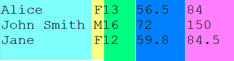
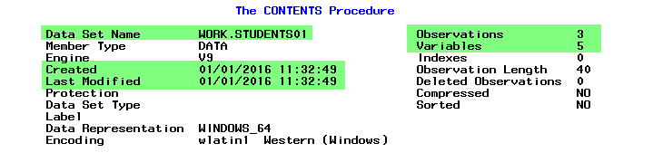
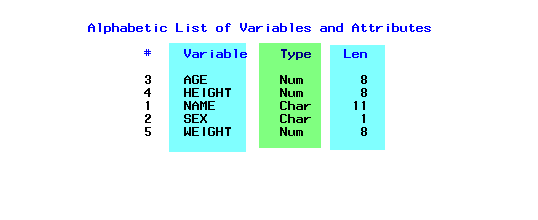

*Copyright @ www.mycsg.in;
What do we mean by reading raw data
SAS procedures expect data in the form of SAS datasets
However, data is often collected first in text files, spreadsheets, or other external sources
Those original text-based sources are often called raw data files
Converting raw data into a SAS dataset is called reading raw data
What do we mean by data arranged in columns
Each distinct piece of information collected for an observation is called a variable
The complete collection of values for one entity is called an observation
In column-aligned raw data, each variable is assigned a fixed set of character positions on every line
For example, columns 1 to 11 may hold a name, while column 12 may hold sex and columns 13 to 15 may hold age
Even if one value is shorter than the space reserved for it, the next variable still begins in its fixed column position
Types of variables in SAS
SAS datasets store data in rows and columns where rows are observations and columns are variables
SAS variables are either numeric or character
Numeric variables store numbers that can participate in arithmetic operations
Character variables store text including letters symbols and digit strings that should be treated as text
How do we read raw data arranged in columns into a SAS dataset
A DATA step is used to create the SAS dataset
The DATA statement gives the name of the dataset to create
The INFILE statement identifies the external raw data file
The INPUT statement describes variable names types and column positions
A character variable name must be followed by a dollar sign in the INPUT statement
Read raw data from an external file
A dataset named `students` is created from an external text file
Five data components are read from fixed column positions
`name` and `sex` are character variables so they use a trailing dollar sign
`age` `height` and `weight` are numeric variables
Each line of raw data becomes one observation in the SAS dataset
data students; infile "D:\SAS\Home\dev\clinical_sas_samples\mycsg\SAS\SAS_READRAW\SAS_READRAW_L101\SAS_READRAW_L101_data1.txt"; input Name $ 1-11 Sex $ 12 Age 13-15 Height 17-20 Weight 23-27; run;
Copy Code
View Log
SAS Log
data students; infile "D:\SAS\Home\dev\clinical_sas_samples\mycsg\SAS\SAS_READRAW\SAS_READRAW_L101\SAS_READRAW_L101_data1.txt"; input Name $ 1-11 Sex $ 12 Age 13-15 Height 17-20 Weight 23-27; run; NOTE: The infile "D:\SAS\Home\dev\clinical_sas_samples\mycsg\SAS\SAS_READRAW\SAS_READRAW_L101\SAS_READRAW_L101_data1.txt" is: Filename=D:\SAS\Home\dev\clinical_sas_samples\mycsg\SAS\SAS_READRAW\SAS_READRAW_L101\SAS_READRAW_L101_data1.txt, RECFM=V,LRECL=32767,File Size (bytes)=90, Last Modified=02 February 2025 16:31:28, Create Time=02 February 2025 16:31:28 NOTE: 3 records were read from the infile "D:\SAS\Home\dev\clinical_sas_samples\mycsg\SAS\SAS_READRAW\SAS_READRAW_L101\SAS_READRAW_L101_data1.txt". The minimum record length was 28. The maximum record length was 29. NOTE: The data set WORK.STUDENTS has 3 observations and 5 variables. NOTE: DATA statement used (Total process time): real time 0.00 seconds cpu time 0.01 seconds
Inspect `students` and confirm that each raw line was converted into one row of structured SAS data
Raw data file screenshot
Raw data file screenshot

View Data
Dataset View
Read in-stream raw data
Raw data does not always need to come from an external file
When raw data lines are written directly inside the SAS program we call it in-stream data
In this case the `datalines` statement marks the start of the raw data lines
The same INPUT column specification can be used for in-stream data as well
data students01; input Name $ 1-11 Sex $ 12 Age 13-15 Height 17-20 Weight 23-27; datalines; Alice F13 56.5 84 John Smith M16 72 150 Jane F12 59.8 84.5 ; run;
Copy Code
View Log
SAS Log
data students01; input Name $ 1-11 Sex $ 12 Age 13-15 Height 17-20 Weight 23-27; datalines; NOTE: The data set WORK.STUDENTS01 has 3 observations and 5 variables. NOTE: DATA statement used (Total process time): real time 0.01 seconds cpu time 0.01 seconds ; run;
The dataset `students01` should contain the same logical variables as `students`
This example shows that column input works both for external raw files and in-stream raw data
View Data
Dataset View
Understand the attributes of a SAS dataset
After creating a dataset we often need to inspect its attributes
Important dataset level details include dataset name number of observations number of variables and creation metadata
Important variable level details include variable name type and length
`proc contents` is used to review these attributes
proc contents data=students01; run;
Copy Code
View Log
SAS Log
proc contents data=students01; run; NOTE: PROCEDURE CONTENTS used (Total process time): real time 0.03 seconds cpu time 0.01 seconds
Dataset attributes screenshot
Dataset attributes screenshot

Variable attributes screenshot
Variable attributes screenshot

From the variable attributes you can see the name type and length of each variable
The `name` variable was read from columns 1 to 11 so SAS assigned it a length of 11 bytes
The `sex` variable was read from one column so SAS assigned it a length of 1 byte
Numeric variables usually have a default storage length of 8 bytes unless otherwise specified
Key points to remember
Reading raw data means converting external text based data into a SAS dataset
Column input is used when each variable occupies fixed columns on every row
Character variables require a dollar sign on the INPUT statement
The same column input logic can be used for external files and in-stream data
`proc contents` helps verify that the dataset and variable attributes were created as expected